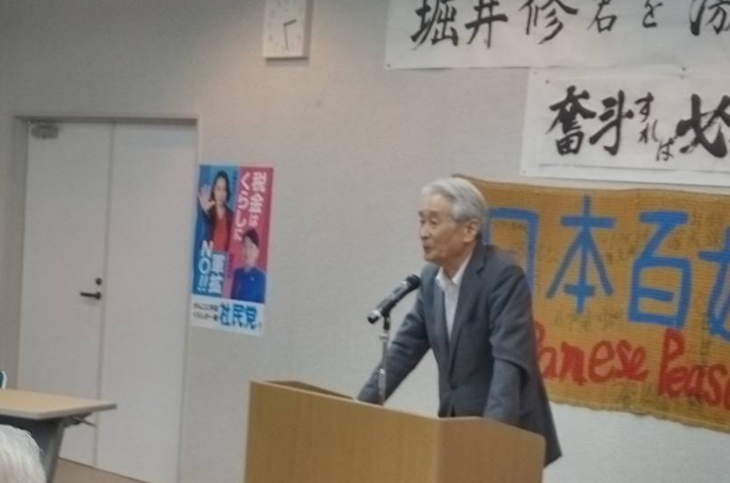
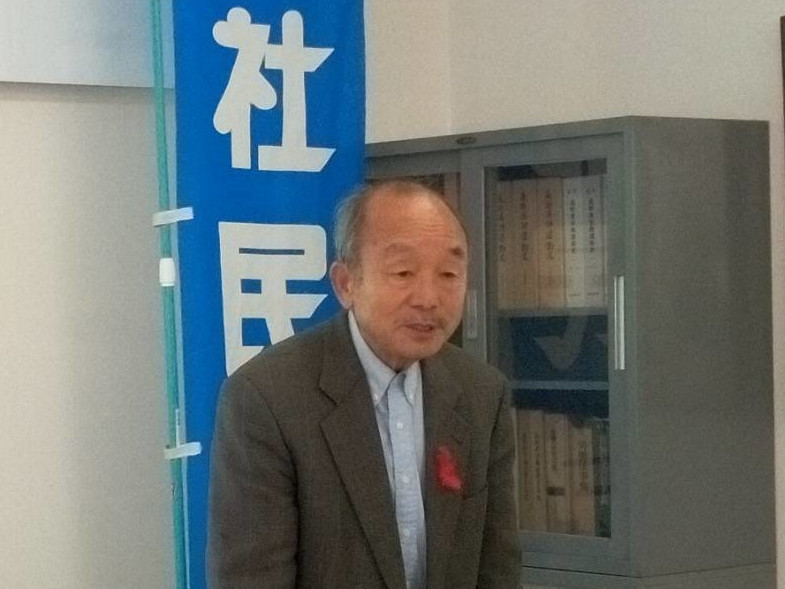

安全保障は防衛だけではない！ 食料の安全こそ最重要！
１ 米の生産は大丈夫か？
現在日本の米生産量は670万t。これでも余ると毎年10万t以上の減産をしています。このまま行くと米を作れなくなります。 その一方私たちの食卓にはパンやパスタなどの麺類が並びます。その原料の麦は大半アメリカやカナダ，オーストラリアから輸入されています。数量は700万tにもなります。 日本で生産される米よりも30万ｔも多いのです。その上に何故かMA米という米が78万ｔ輸入されています。 輸入麦と生産されている米を合わせると1,370万t。かつて56年前に日本では1,450万tの米を作っていました。生産能力はあるのです。それを車等の輸出のために減反をしているのが現在です。
２ 米は高いのか？
みなさんンの食べているお米1杯は30円前後です。米の値段はマスコミでは1俵（60kg）で報道されます。たしかに12,000円や13,000円では高いように見えます。しかし現在日本人の食べている米は1年間に56kgです。だから食べる金額は1万円くらいになっています。 100円のパンがありますか？米は2膳食べても60円です。米の消費金額がパンに追い越されてのは6年前です。
３ 健康について
米は育てる時の虫や病気を防ぐために農薬をまきます。しかし収穫をしてから農薬は使いません。だから農薬の残留基準は0.1PPMつまり1,000万分の1です。ところがアメリカやカナダから輸入される小麦は育てる時にも農薬をまきますが。問題は収穫する時ラウンドアップ（除草剤）まいて収穫するのです。その残留基準は３０PPMです。除草剤は体に良いわけではありませんね。 それで終わりかと思いきや。刈り取られ麦になってから日本まで運ばなければなりません。アメリカから日本まで、メキシコ湾を通って太平洋を旅してきます。距離は数千kｍ。この間に虫やカビが発生します。そうなるとこれも農薬を使う事になります。 みなさんの住む隣の田んぼから運んだ米がいかに安全であるかはおわかりになるでしょう
４ 環境についてはどうですか
アメリカ等から数千ｋｍも運ぶためにどれだけの燃料を使うでしょう。 それにトウモロコシや大豆等を含めると15,000万ｔを超えます。どれだけのＣｏ２を排出するでしょうか？ 今年の夏の暑さは経験したことのないものでした。また雨が少ないと言っても降ると1時間に100ｍｍ。結果が洪水です。 新潟では夏の高温のために品質が低下し値段が下がり稲作経営が危機を迎えています。これは米を食べて麦の輸入を減らせば燃料は少なくなりＣｏ２を減らす事が出来ます。
５ 学校給食に有機米を
輸入小麦に大きな問題がある事を述べてきました。それでは何をするのかです。社民党は学校給食で有機米を食べてもらう事を提案しています。有機米は農薬や化学肥料を使わない米です。これを全国でしかも無料で実施するのです。全国の学校給食を無料しても5,000億円しかかからないと言う試算があります。新潟県の予算は1.3兆円です。高いものではないはずです。
６ 自給率を上げることが最も大切です。
国は来年の通常国会で農業基本法を改正するようです。 年末に予想される衆議院の解散総選挙では物価の高騰、軍事費の増額などが焦点になりそうです。軍事費の増額は昨年比３０％です。 どうして食料の安全保障が議論にならないのですか。 あなたの体は食べ物によってできています。1日に3食べる食事、内国産で賄える量が1食しかありません。 私たちにとって最重要な事は自給率を上げることでしょう。健康に環境にそして財布にも優しいのです。
比例区は社民党にお願いします
2歳のちびにやられた❗
先日友人の家を訪ねました。そこに出されたのはスイカ今時？奥さんいわく。これは家で昨年種を取って9月に収穫したスイカ🍉だというのです。まさに自家製！いただきました❗旨いとテーブル食べた皮を置くと2歳のちびがやって来て不満のかおを私に向けています。 もっと食べたいのか？ しかしテーブルの上には彼らが食べたスイカの皮が山盛り？母親が言います。あなたの食べたスイカの皮に赤い部分が残っている。と言っています？あわててたへるとご機嫌が良くなりました。ちなみにその家ではきれいに食べた皮を漬物にするそうです。たまげだね。種から漬物まで2歳のちびに教わりますましたよ⁉️
街宣での滅多にない話
11月22日その日は県北の村上を中心とした街宣行動でした。 胎内市のショッピングセンターで私が演説を始めると軽自動車から白いシャツを着た人が話している道の反対側にやって来て聞き始めました。 まずこの国の食料自給率は３７％しかないのです。と言うと。そんな事は知らなかったとアイヅチ。これは面白い人がと次に胎内の米を食べてと言うと。
「そうだ、そうだ」とおっしゃる。 あなたが食べているパンはアメリカから1万kｍも運ばれてきていますよ。その間に虫もカビの生えますよ。農薬まみれの小麦粉で焼いたパンを食べていることをご存じですか？ そうか政府はそんなことを全く国民に知らせていないな。けしからん。 そして、あなたの周りにいくらでもある田んぼから収穫されている米は刈り取ってから農薬は使っていませんね。
そうだな。JAに出荷されそれが俺の食卓に上がんだもんな。でも田んぼには農薬を撒いているぞ。 しかし、収穫してからはアメリカの小麦のように農薬は撒いていません。その必要もないでしょう。 そうだねせいぜいで数十キロだからね。 次に値段だレ。あなたが食べる茶碗一杯いくらだと思いますか？ ・・・わからないな？ 30円以下ですよ。そんなに安いのかね？ 100円でパンは買えますかね？・・ないね。米は100円で3杯食べておつりが10円ですよ。 ほんとかね。
社民党は学校給食に農薬を使わないお米を提供したい。しかも無料でその上胎内産の野菜などを供給するとういう政策を作っています。 言う通りだね。子供が大切だ健康にも環境にもいい給食だ。それもオメサンが言うように義務教育は無料だとするならば給食費もタダがあたりまいだ。 ところで原発はどうだね？
もちろん反対だて。事故がおっかないからね。 オメサン考えが甘いな。あれは核兵器を作る準備をしているのだがね。「え？」 俺は自衛隊にいたからよく知っているんだよ。 恐れ入りました。 まあ頑張れや？！ こんな街宣だったら毎日やりたいね。残念ながら写真はありません。
ショピングモールは広大な田んぼをつぶしています。周りにある耕作放棄田⁉️農道に広がるセイダカアワダチソウの黄色の花いずれ放棄された田んぼを征服する？ お米は誰がつくる⁉️
11月19日堀井修を激励する会が83人の仲間が集まって開催されました。 神出鬼没の堀井さん。職場では百姓の話しをよく聞いていた。 いまの政治家は現場の実態を知らない⁉️ 熟知している堀井さんに期待します。 健康に気を付けて頑張ってください。 いろいろな声が出ました。 私は皆さんの期待に応えるべく頑張ります。とお礼を申しあげました。
11月5日で新潟 長野 富山 石川 福岡県を遊説しました。感じた事？ 日本はすっかりショッピングモールができ上がりました❗たしかに便利になりました？ 私は団塊の世代。10年後車の運転ができる？駐車位置から売り場まで歩けるか？そしてもどれる？ 買い物難民確実だ⁉️
11月3日富山市 憲法記念日。6会場演説。 駅前の話しが終わったら。あんたの話しで胸のつっかえが。とれた。米以上の麦を輸入すれば米は食わなくなるはずだ！ 私もコシヒカリを作っています。高温にため品質は落ちました‼️同感‼️ 演説していて気がつきました。ソウダ ソノトオリ！のかけ声 元気がでます。スーパーの駐車場もよく見ると車を出て私の話しを聞いている姿を見かけます。ありがたいですね。
柿酢の作り方
金沢市の演説で105人の集まり。米はなぜあまる？パンや麺のためでしょう。 670万tの国内生産に700万tの麦輸入。サウジのような砂漠ならいざ知らず。かつて1450万tも作った事かあるのです。 麦はアメリカやカナダから運んで来ます。虫やカビもでます。農薬をまいて来るのです。農薬はきらいでしょう？ 金沢市で取れる米を食べませんか。 多くの質問意見がお母さんたちから出て司会が時間ですと言って終了です。私にとっても楽しい講演会でした。

長野県塩尻での街頭演説
長野県上田市の街頭演説

上田市の衆議院比例区選対設立会議でのあいさつ
米生産の採算が合わない事は初めて知りました？
採算割れの稲作りを若者が継がないのは当たり前❗家では家族3人で米2俵もっと食べ農家を支援しますよ❗
街頭では手をふって激励してくれる人。元気がでます😃
いよいよ収穫だね
おめさん収穫んときコンバインが詰まるのがイッチセツネの？ ソイガテの雨が降るとなかなか稲が乾かないで気がセイッテ コンバインを動かそうとするとたいてい詰まってエンジンが止まったり ベルトの送りが悪くなったりして稲刈りがストップするんでノ。 そんな時稲にが枯れていたらどんなにコンバインが楽だかと思うサの。
そういえばこないだアメリカやカナダの小麦は ラウンドアップをまいて刈り取るらしいゾ
俺たちが作る米の農薬残留基準は玄米で0.1PPM （1000万分の1) って 知ってなさるかノ？知らんかったテ。(残留基準とは国が認める農薬基準) 輸入小麦の残留基準は30PPMなんだと！何だって？それならば 300倍になるんだレ。安全かね？ラウンドアップは栄養剤でない。除草剤だレ
小麦はたくさんの殺虫剤・殺菌剤がまかれると。
しかも、アメリカから輸入するためには何回も虫やカビの農薬散布が されるガラト。畑から収穫されてた麦はまず地域のカントリーエレベータに 貯められるコテね。そしてミシシッピー河に作られたカントリーに集まられて まずそこで殺虫剤や殺菌剤が小麦にまぶされるのだと。 それで終わりカノ？まだまだだコテの。
アメリカのセントルイスて場所知っているかの？
あの西部劇ででてくるゲートウェイかの。そうミシッピー河の中流だコテね。 俺も一回行ったことがあるがノ。この辺のカントリーエレベータなんか 比べられるもんでないがラテ。でっかいもんだぜ。それが見渡すか限りあるガラテ。 そこで集められた小麦がメキシコ湾に集められてようやく積み出しだレ。 冷凍船ではないんだレ。そうなればまた殺虫剤と殺菌剤の散布だれ。もっと メキシコ湾からパナマ運河を通って日本まで運ぶんだ。 赤道近くを通る。アッチエコテね。虫やカビが出なければ不思議だ。 そして日本に着くだろう。そこでもまた撒くガラと。
そいガラかの。俺の稲もカメムシやイモチが付かんように農薬は撒くが 収穫してからは撒かんぜ。これだけ撒くから輸入小麦の残留基準は6PPMだと 60倍ダレ。こうしなければ小麦の一万km以上の長い旅は虫やカビの発生を 妨げないコテね。
麦を運ぶためにどれだけの燃料を使うンダ？
そして最後がフードマイレージダテ。それは何だテ？麦を運ぶためには ミシッピー河で数千kmそしてメキシコ湾、パナマ運河を通り太平洋だろ。 どれだけの燃料を使うと思いなサル？地球環境が問題になっている今問題 だろうーテ。やっぱり日本の米が安全で環境にもよいということだテ！ そうかね、米が安全で環境にも良いという事ダノ。
毎年米が余ると言うんだがノ？
まずオメサン米食ってるかの。あたりメーダコテね。百姓ダスケの。 しかし家の若いモンは朝パン食べてるな？俺も夕飯はビールを飲んでるノ？ まあそれは普通だの街ショは朝はパン。 昼は勤め先でラーメンそして夜はビールだ。 太るからとご飯は食べないで寝る。こんな生活では 米は一粒も食べないコテね。つまりパンは小麦に よってビール（日本酒）は大麦によって日本人の口に入らないという事だコテね。 麦が米を押し出しているのが現状だがノ。
政府は不思議な事をしているガラテ。
MA米と言って日本が米の輸入の自由化をした時から年間78万tの米を 輸入している事知ってナサルか？ 新潟県の米は56万tだレ？ 政府に質問するとこれは国家貿易品目でやめることはできないと 考えるんサの。調べるとアメリカからの小麦は裏の話があるようで 60kg30,000円で入札されているガラと。オメサンの米はいくらダノ。 12,000円タイからの米は50,000だぜ。それも1トンダレ。 なんでも78万tの半分はアメリカからの米だというんだと。 だからその差損は400億円だというからノ。 でたらめだコテね。腹が立つノ。 今年の日本の米の生産は670万tだれ。そして来年はまた15万tも 減らすと言うガラテ。米退治だての。買ってもらえる米の生産だと。 輸入される小麦は550万t。大麦は200万tダレ。これで米が余るのは 当たり前だダロテ。政府や農協は米が余るから激反だ多用途米だと宣伝している。 「農協は食べてもらえる」と言うがノ。
日本の自給率は38%タロネ。 3食に一回しか米を食わない計算だレ。 国はウクライナ戦争を例に軍事費を増額しなければと来年度予算を30% も上げたノ。ところが農林予算は3%減だぜ。
戦争には反対だが「腹が減っては戦ができない」と言うぜ。
国はまず国民に十分な食料とその安全性を保障する義務があるはずだロテ。 国民はまたそれを要求する権利があるはずだテノ。憲法25条はそれを 謳っているレ。オメサン日本の輸出品で車が重要な位置を占めていることを 知ってなサルね。それでは小麦が輸入されなくなったら車が食えるかノ？ バックミラーの天ぷらができるかノ。
百姓に強制的に作らせるダト。罰金付きだと言うガラテ。
政府は今回の食料・農業・農村基本法改正では非常事態には 百姓に米や野菜肉などを強制的に作るような条項を作るガラと？ 今は作るなと言っていて今度は強制だと。罰則付きｄと言うガラテ。 その前にどうしたら自給率を上げられるかが先だろうてネ。 自給率45%とは言うがやる気は全くねネ。 実際に下がっているだろうテ？ 米退治だロネ。 おらたちがまず自給率を上げるために何をするべきか。百姓が考えて 村や町んショに知ってもらい提案することだノ。
選挙を戦うに当たって （北信越比例区）
１．百姓の信念と自信を取り戻しましょう。 1970年米が残ると玄蕃政策がはじまりました。米を作るなということです。 自信を取り戻すには米価を再生産できる値段にしなければなりません。 ご飯１勝32円（魚沼）は高いですか？100円のパンがありますか？
２．高齢化や後継者がいないのは米をつくると赤字になるからです。 百姓はかつて米価闘争で価格を上げてきました。現在は農協が決めています。 百姓の収入を増やすことがJAの使命です。
３．この夏の酷暑は新潟コシヒカリを中心にかつてない品質の低下と 収量の減収を招きました。このような下でこそ百姓は声を出しJAは その声を消費者や政府に訴える時です。
４．来年は農業基本法が改訂されます。中心に食料給率の向上を明記しましょう。 38％は3食の内2食は外国だよりです。目標を６０％に、具体化を 図りましょう。食料自給は消費者の問題です。飢え死には避けましょう。
５．私の息子は20年前に交通事故に遭い、寝たきりです。交通事故を少なく しましょう。このような人達にこそチャットGPTを活かした医療を行いましょう。
この数字は？
１等米と３等米の差 一般コシ（3,100）魚沼コシ（7,100）
最大生産量 1,453万ｔ（67）最大消費量 118ｋｇ/１人 MA米 76.7万t
最大価格（６０ｋｇ） 一般コシ26,245（93） 魚沼コシ31,819（98）
値上がり幅
| 肥料 | 21年 | 22年 | 差額 ％ | |
| 元肥 | 3,267 | 4,972 | 1,705 | 152 |
| 元肥 | 3,883 | 6,556 | 2,672 | 168 |
| 穂肥 | 3,740 | 6,369 | 2,629 | 170 |
| 畑作（里芋） | 2,904 | 5,115 | 2,211 | 176 |
・農業資材価格の堆移 2020年を100とする
| 2000 | 2008 | 2020 | 2021 | 2023 |
| 79％ | 92％ | 100％ | 116％ | 122％ |
社会民主党・百姓塾一同